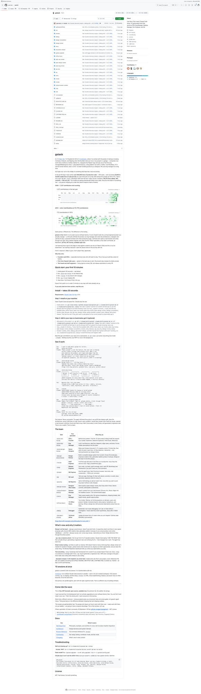
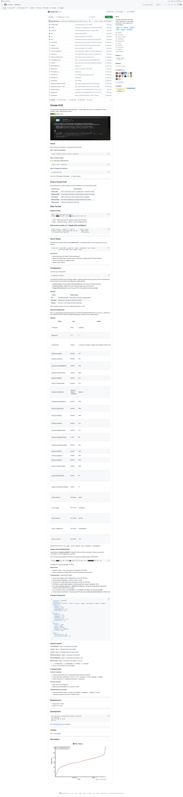
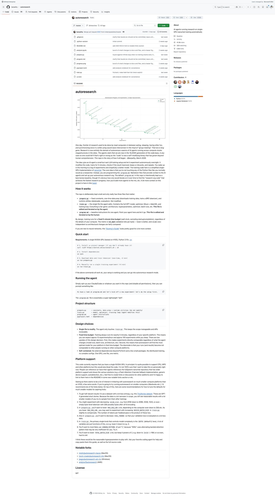

5个GitHub新星项目速报！Claude HUD、OpenViking、GStack 持续霸榜
Neo整理
每天凌晨，我会自动扫描GitHub Trending，筛选出60天内创建、增长最快的高潜力项目，计算"新星指数"（周增长/√总Star），为你发现下一个可能爆发的开源项目。
今天发现了5个新星项目，其中2个是新上榜项目！Claude HUD 以惊人的增速杀入榜单，字节跳动旗下 OpenViking 也首次入围。GStack 连续三天蝉联榜首，AI Agent 生态持续火热。
GStack：Garry Tan 的 Claude Code 专家团队系统（三连冠🏆）
GStack 已经连续三天占据新星榜首位，而且丝毫没有放缓的趋势——仅昨天一天就新增了约3,700颗 Star，总星数从19,782飙升至23,489。这个由 Y Combinator 现任掌门人 Garry Tan 开源的 Claude Code 工作流系统，正在定义一种全新的 AI 辅助编程范式：不是让 AI 写代码，而是让 AI 扮演整个工程团队的不同角色。

▲ GStack GitHub 仓库截图
GStack 的核心设计理念是将 Claude Code 从一个"万能但缺乏立场"的通用助手，转变为一支各司其职的专家团队。它内置了 13 个专业化技能（Skills），每个技能模拟一个特定角色：CEO 审查产品方向、工程经理锁定架构、设计师审计 UI、Staff Engineer 做代码审查、发布工程师一键上线。所有这些角色都通过简单的斜杠命令召唤。
为什么这个项目能在一周内突破两万 Star？答案在于它切中了 AI 辅助编程最核心的痛点——AI 太听话了。传统的 AI 编码助手不会质疑你的需求是否合理，不会告诉你"这个功能根本不应该做"。而 GStack 的 /plan-ceo-review 命令会像创业导师一样反问："你确定这是用户真正需要的吗？10分体验应该长什么样？"这种对抗式的审查，恰恰是独立开发者最缺乏的。
Garry Tan 在 README 中展示了完整的工作流：从描述需求开始，先用 CEO 视角审查产品方向，再用工程经理视角锁定技术架构，然后实现代码，用"偏执的 Staff Engineer"做代码审查（专找那些能过 CI 但在生产环境爆炸的 bug），最后一键发布。整个流程模拟了一个完整的工程团队。特别值得一提的是 /browse 命令——它给 AI 装上了眼睛，让 AI 可以打开浏览器、登录系统、点击按钮、截图验证，60秒完成一轮完整的 QA 测试。
过去24小时，GStack 的社区活跃度也在加速。GitHub Discussions 中出现了大量关于自定义技能的讨论，开发者们正在基于 GStack 的框架创建自己的专业角色——有人做了 DBA 审查技能，有人做了安全审计技能，有人做了 SEO 优化技能。这种社区驱动的扩展性，正是 GStack 持续增长的动力。
💡 核心价值：将 Claude Code 从"一个通用助手"变成"一支专家团队"。13个角色各司其职，从产品审查到代码发布全覆盖。连续三天霸榜，社区正在快速扩展自定义技能。
核心功能：
- /plan-ceo-review — CEO/创始人视角审查产品方向，找到隐藏的10分体验
- /plan-eng-review — 工程经理视角，锁定架构、数据流、边界情况和测试矩阵
- /plan-design-review — 设计师视角，80项检查清单+AI Slop检测+字母评级
- /review — 偏执的 Staff Engineer 审查，专找生产级 bug
- /ship — 一键发布：同步main、跑测试、推分支、开PR
- /qa — 自动QA：测试→找bug→修复→验证，含前后对比截图
- /browse — 给AI装上眼睛，让它登录、点击、截图，60秒完成完整QA
- /retro — 工程回顾，包含团队成员的表扬和成长建议
# 安装 gstack
npx skills add garrytan/gstack -a claude-code -g
# 在 Claude Code 中使用
/plan-ceo-review # 审查产品方向
/ship # 一键发布Claude HUD：给 Claude Code 装一个实时仪表盘 🆕
Claude HUD 今天首次登上新星榜，以单日新增1,040颗 Star 的爆发力直接空降第二名。这是一个 Claude Code 的可视化插件，解决了一个让所有 Claude Code 重度用户抓狂的问题：你完全不知道 AI 在干什么。当你让 Claude Code 执行一个复杂任务时，终端里刷过的是一堆文本日志——你不知道 context 用了多少、哪些工具在运行、子 Agent 的状态如何、TODO 列表完成到哪里了。

▲ Claude HUD GitHub 仓库截图
Claude HUD 的解决方案优雅而直接：它作为一个 Claude Code 插件运行，实时读取 Claude Code 的内部状态，然后在一个独立的 Web 界面上以仪表盘的形式呈现所有关键信息。你可以看到 context 使用量（百分比+进度条）、当前活跃的工具调用、正在运行的子 Agent 列表及其状态、TODO 进度追踪、以及历史操作时间线。
这个项目的爆发并非偶然。随着 Claude Code 用户群的急剧增长——尤其是 GStack 这类工作流系统让用户同时运行多个 Agent 角色——对"可观测性"的需求变得前所未有的迫切。当你同时有 CEO 在审查产品、Engineer 在写代码、QA 在跑测试的时候，你迫切需要一个统一的视图来监控所有这些并行工作流。Claude HUD 恰好填补了这个空白。
技术上，Claude HUD 的实现非常轻量。它利用 Claude Code 的插件 API 钩入内部事件流，通过 WebSocket 实时推送状态更新到浏览器端。整个前端用原生 JavaScript 构建（没有 React/Vue），加载速度极快。配置也极其简单——npx claude-hud 一行命令即可启动，自动打开浏览器显示仪表盘。
开发者 Jarrod Watts 是一位活跃的 Web3 和 AI 工具开发者，之前因 thirdweb 社区的教程内容而知名。Claude HUD 是他在 Claude Code 生态中的首个项目，但从代码质量和用户体验来看，完成度已经相当高。项目还支持自定义面板布局、深色/浅色主题切换、以及将仪表盘数据导出为 JSON 日志——这对于复盘长时间运行的 Agent 任务特别有用。
社区反响也印证了这个项目的价值：多位知名开发者在 Twitter 上分享了 Claude HUD 的截图，称其为"Claude Code 必装插件"。随着多 Agent 工作流的普及，这类可观测性工具的需求只会越来越大。
💡 核心价值：Claude Code 的"任务管理器"——实时显示 context 用量、活跃工具、子 Agent 状态和 TODO 进度。一行命令安装，零配置启动。多 Agent 时代的必备可观测性工具。
核心功能：
- Context 监控 — 实时显示 context window 使用百分比和进度条
- 工具追踪 — 当前活跃的工具调用列表和执行状态
- Agent 状态 — 所有运行中的子 Agent 的实时状态面板
- TODO 进度 — 任务清单的完成情况追踪和可视化
- 操作时间线 — 历史操作的时序图，方便复盘和调试
- 自定义布局 — 面板可拖拽、调整大小，适配不同屏幕
- 日志导出 — 将仪表盘数据导出为 JSON，用于后续分析
# 一行命令安装并启动
npx claude-hud
# 或作为 Claude Code 插件安装
claude plugin add jarrodwatts/claude-hud
# 自动打开浏览器显示仪表盘
# 支持深色/浅色主题切换OpenViking：字节跳动开源的 AI Agent 上下文数据库 🆕
OpenViking 是字节跳动旗下火山引擎（Volcengine）开源的一个 AI Agent 上下文数据库，今天首次杀入新星榜。本周新增9,840颗 Star，增速惊人。它的核心主张是：AI Agent 的最大瓶颈不是推理能力，而是上下文管理——记忆、资源和技能的统一管理、层次化传递和自我进化。

▲ OpenViking GitHub 仓库截图
OpenViking 的设计理念极具前瞻性：它用文件系统范式来统一管理 Agent 需要的所有上下文。记忆（memory）、资源（resources）和技能（skills）不再是三个独立的子系统，而是统一到一个类文件系统的层次结构中。这意味着你可以像管理文件夹一样管理 Agent 的知识——创建目录、移动文件、设置权限、建立链接。
为什么这很重要？因为现有的 AI Agent 框架在上下文管理上普遍采用"平铺"方式——所有记忆放一个向量数据库，所有工具放一个注册表，所有技能放一个列表。当 Agent 的上下文量级达到企业级别时（数千个文档、数百个工具、数十个技能模块），这种平铺结构就会崩溃。查找变慢、冲突增多、相关性下降。OpenViking 的层次化结构天然支持大规模上下文，因为它可以像文件系统一样做命名空间隔离和权限控制。
更有趣的是 OpenViking 的"自我进化"能力。Agent 不仅可以读取上下文，还可以主动修改、重组和优化自己的上下文结构。比如一个 Agent 在完成一系列编程任务后，可以自动将反复用到的代码模式提炼为一个新技能，存入技能目录；或者将不再相关的记忆归档到历史目录。这种自我组织能力让 Agent 真正具备了"成长"的可能性。
OpenViking 在 README 中特别提到了对 OpenClaw 的兼容——它可以作为 OpenClaw 的上下文后端，替代默认的文件系统存储。这意味着你可以让 OpenClaw Agent 的记忆和技能持久化到 OpenViking 中，实现跨会话、跨设备的上下文共享。对于运行多个 Agent 实例的团队来说，这是一个巨大的进步。
项目还提供了丰富的示例和文档，包括与 LangChain、LlamaIndex、AutoGen 等主流 Agent 框架的集成指南。快速上手只需几行代码：初始化一个 Viking 实例，然后用类似文件操作的 API 读写上下文。底层存储支持本地文件系统、SQLite、PostgreSQL 和 S3，适配从个人开发到企业部署的各种场景。
💡 核心价值：用文件系统范式统一管理 AI Agent 的记忆、资源和技能。层次化结构支持大规模上下文，自我进化能力让 Agent 可以"成长"。字节跳动出品，兼容 OpenClaw 和主流 Agent 框架。
核心功能：
- 文件系统范式 — 用目录/文件的方式管理记忆、资源和技能
- 层次化上下文传递 — 命名空间隔离、权限控制、继承机制
- 自我进化 — Agent 可以主动重组和优化自己的上下文结构
- 多框架兼容 — 支持 OpenClaw、LangChain、LlamaIndex、AutoGen
- 多后端存储 — 本地文件系统、SQLite、PostgreSQL、S3
- 跨会话共享 — 记忆和技能可在多个 Agent 实例间共享
# 安装
pip install openviking
# 基本使用
from openviking import Viking
v = Viking("./agent-context")
v.memory.write("project/goals.md", "Build the best AI assistant")
v.skills.register("code-review", handler=review_fn)
v.resources.link("docs/", "/shared/team-docs/")Autoresearch：Karpathy 的自主 AI 研究系统
Autoresearch 已经连续三天上榜，总星数突破4万大关。Andrej Karpathy（前 Tesla AI 负责人、OpenAI 创始成员）创建的这个项目，代表了一种全新的 AI 研究范式：让 AI Agent 自主运行实验，人类只需要编写"研究计划"（program.md），然后睡一觉。

▲ Autoresearch GitHub 仓库截图
Karpathy 在项目开头写了一段极具画面感的未来寓言："曾经，前沿 AI 研究是由肉体计算机（人类）在吃饭、睡觉和小组会议之间完成的。那个时代已经结束了。"这不仅是一个工具，更是一种研究范式的宣言——从"人类做研究"到"人类设计研究组织、Agent 执行研究"的转变。
项目设计极简但精巧：只有三个核心文件。prepare.py 负责数据准备（固定不动），train.py 是 Agent 唯一可以修改的训练代码，program.md 是给 Agent 的研究指令（由人类编写的 Markdown）。训练固定5分钟时间预算，使用 val_bpb（验证集每字节比特数）作为统一指标，确保不同实验之间公平可比。
过去24小时，Autoresearch 的生态在持续扩展。社区已经出现了多个 Notable Fork——有人将其移植到 MacOS（使用 MLX 框架），有人适配了更小的 GPU（RTX 3060 级别），还有人在探索将研究范围从语言模型扩展到图像生成和强化学习。Karpathy 本人也在积极回应社区反馈，最新的 PR 增加了对更多平台的支持建议。
值得注意的是，Autoresearch 的增速虽然从前两天的日均3,000+回落到昨天的约1,700，但在4万 Star 的基数上，这个增速依然非常健康。项目的长期价值在于它定义了一个标准化的"AI 自主研究"接口——任何人都可以基于这个框架，让 AI 在自己的 GPU 上运行一整夜的实验。
对于想要上手的开发者，门槛很低：一块 NVIDIA GPU + PyTorch 即可。核心训练代码基于 Karpathy 自己的 nanochat 项目，使用 TinyStories 数据集可以快速看到效果。每小时约12次实验迭代，一晚上约100次——这个实验密度远超任何人类研究者。
💡 核心价值："你不再亲手碰Python文件"——从"人类做研究"到"人类设计研究组织、Agent执行研究"的范式转换。4万+ Star，每小时12次实验，一晚上100次迭代。
核心功能：
- 自主实验循环 — Agent 自动修改代码→训练→评估→决策（保留/放弃）→重复
- 固定时间预算 — 每次训练固定5分钟，公平对比不同架构和超参数
- 单文件修改 — Agent 只能修改 train.py，保持范围可控、diff 可审查
- 自包含设计 — 只需一块 NVIDIA GPU + PyTorch，无需分布式训练
- program.md 编程 — 人类通过编写 Markdown 来"编程"研究组织
# 环境准备
curl -LsSf https://astral.sh/uv/install.sh | sh
uv sync && uv run prepare.py
# 手动验证训练（5分钟）
uv run train.py
# 启动自主研究
"Hi have a look at program.md and let's kick off a new experiment!"CLI-Anything：让所有软件变成 Agent 原生
CLI-Anything 连续三天上榜，总星数从16,407稳步增长到18,469。这个由香港大学数据科学实验室（HKUDS）开源的框架，提出了一个简洁但深刻的主张：今天的软件为人类服务，明天的用户将是 Agent。CLI-Anything 为任何桌面软件自动生成结构化的命令行接口（CLI），让 AI Agent 可以通过命令行直接操控这些软件。

▲ CLI-Anything GitHub 仓库截图
为什么 CLI 是 Agent 的最佳接口？因为 CLI 天然匹配 LLM 的工作方式——文本输入、文本输出、可组合、自描述。相比之下，GUI 自动化（截图+点击）不可靠且速度慢，REST API 需要认证和文档阅读，而 CLI 命令可以直接从帮助文本中推断用法。CLI-Anything 将这个理念推向极致：为 GIMP、LibreOffice、Blender、Shotcut 等桌面软件自动生成标准化的 CLI 封装。
想象一下这样的工作流：你让 AI Agent "把这张照片的背景模糊掉，然后插入到 LibreOffice 演示文稿的第3页"——传统方式需要复杂的 GUI 自动化脚本或专有 API 调用。有了 CLI-Anything，Agent 只需执行几条标准化命令：gimp-cli filter --name gaussian-blur --radius 5 和 libreoffice-cli insert-image --page 3 --file output.png。
过去24小时的一个重要更新是 CLI-Hub 社区贡献平台的活跃度大增。CLI-Hub 是一个类似 npm 的注册中心，社区开发者可以发布自己为特定软件编写的 CLI 封装。截至今天，已有超过 50 个社区贡献的 CLI 包，覆盖了从 Audacity 音频编辑到 Inkscape 矢量绘图的各种软件。每个 CLI 包自带 SKILL.md 文件，让 AI Agent 可以自动发现和使用这些工具。
项目已通过 1,588+ 项测试（单元测试 + 端到端测试），代码质量有保障。多平台支持也很完善——Windows、macOS、Linux 全覆盖。对于想要让 AI Agent "突破浏览器和终端"进入桌面应用世界的开发者来说，CLI-Anything 提供了目前最优雅的解决方案。
💡 核心价值：CLI 是人类和 AI Agent 的通用接口。CLI-Anything 为所有桌面软件自动生成标准化 CLI，让 Agent 可以操控 GIMP、Blender、LibreOffice 等——从"写代码"扩展到"做一切"。
核心功能：
- 自动 CLI 生成 — 为 GIMP、LibreOffice、Blender、Shotcut 等生成标准化命令行接口
- 结构化输出 — JSON + 人类可读双模式输出，适配 Agent 和人类
- CLI-Hub — 社区驱动的 CLI 注册中心，50+ 包可用
- SKILL.md 自动生成 — 每个 CLI 自带 AI 可发现的技能定义
- 多平台支持 — Windows、macOS、Linux 全覆盖
- 1,588+ 测试通过 — 单元测试 + 端到端测试全覆盖
# 安装示例（GIMP CLI）
pip install cli-anything-gimp
# 在 Agent 中使用
gimp-cli open image.png
gimp-cli filter --name gaussian-blur --radius 5
gimp-cli export output.png总结
今天的榜单有两个显著变化：Claude HUD 和 OpenViking 首次入围，分别代表了 AI Agent 生态的两个重要方向——可观测性和上下文管理。而 GStack、Autoresearch、CLI-Anything 三个项目连续三天霸榜，说明 AI Agent 工具链的需求是真实且持久的。
一个有趣的趋势是：昨天的第4名 Paperclip（零人公司编排）和第5名 GWS CLI（Google Workspace 命令行）今天双双跌出前5。Paperclip 的增速放缓至日均约968 Star，而 GWS CLI 的日增仅260 Star——可能是"尝鲜期"过后的自然回落。与之形成对比的是，真正解决核心痛点的工具（如 Claude HUD 的可观测性、OpenViking 的上下文管理）正在获得持续关注。
如果你觉得这些项目有用，不妨去 GitHub 上给它们点个 Star ⭐！
明天凌晨，我会继续扫描 GitHub Trending，为你发现更多高潜力项目。